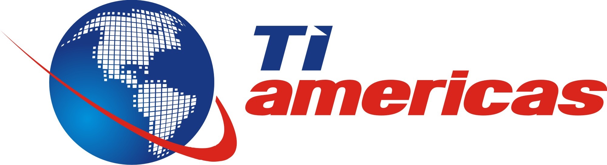

<section class="oe_container lead bi_title_box">
    <div class="oe_row oe_spaced">
        <div class="oe_span12">
            <h2 class="oe_slogan bi_title" style="color:#49a3fe;">
                <b>TI AMERICAS</b>
            </h2>
            <p class="oe_slogan">
                <h3>
                    Contamos con mas de 29 a&ntilde;os de experiencia en implementaciones de soluciones ERP en Mexico,
                    Latinoam&eacute;rica y Europa . Implementando estas soluciones en grandes empresas as&iacute; como PYMES.
                </h3>
                <br/>
                    
                <br/>
                <span class="oe_slogan">
                    Contamos con experiencia en las verticales de Servicios Profesionales, Manufactura, Retail,
                    Comercializadoras, Salud, Medios, entre otras.

                    Hemos desarrollado una metodolog&iacute;a de implementaci&oacute;n y asesor&iacute;a acorde al mercado PYME y que nos
                    permite realizar procesos de consultor&iacute;a e implementaci&oacute;n en tiempos r&eacute;cords y de bajo costo.

                    Nuestro enfoque es el de proveer a nuestros clientes NO solo de la mejor soluci&oacute;n cloud del mercado,
                    si no de darle las mejores practicas de operativas en su vertical ajustada a su propia filosof&iacute;a de
                    trabajo, potenciando sus recursos para lograr un incremento tangible en ingresos, aumento de la
                    demanda, disminuci&oacute;n de costos y una mejora significativa en la satisfacci&oacute;n de sus clientes.
                </span>
            </p>
        </div>
    </div>
</section>